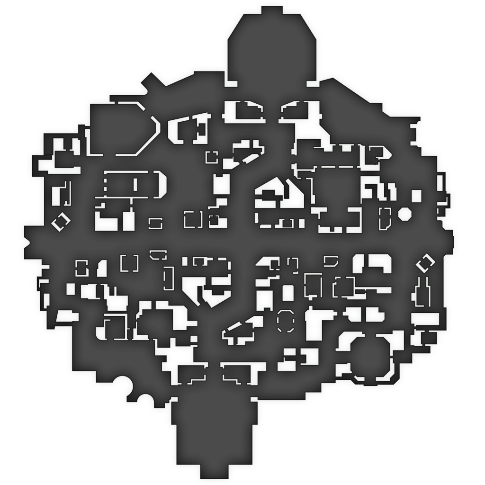

Deadlock marker research · 27 October 2026Deadlock map marker research
27 October 2026 · 913 source reference points · 3 zipline paths recorded · current tracked game build 6821
Research preview: fixed locations, not live availability. Native game icons are used where verified; small coloured dots are labelled companion symbols.
Read placement findings and gaps · Full coordinate catalog · Data checks

Select a marker. Layer selection adds artwork only; it does not assign every marker to a floor.
Unresolved locations and live markers
Saved game icon gallery and source mapping
Assets are genuine game exports from the current API. Presence in the gallery does not establish that an icon is used in the current standard game mode. Buildings also use health rings, faction colours and phase-specific artwork.